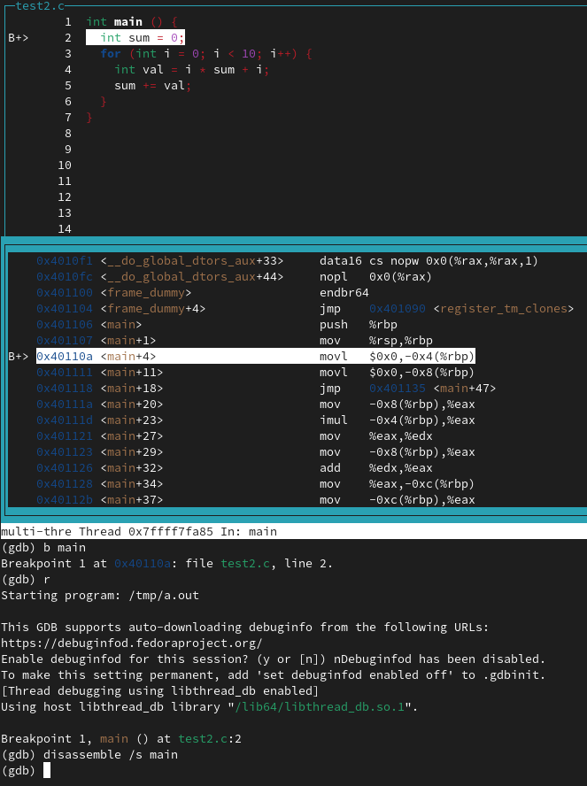

Have you ever wonder how to view the assembly code generated for the particular line of code written in C before? Perhaps you have used Compiler Explorer by Matt Godbolt to play around with the source code to examine the behavior that is occuring behind the scene.
tldr
disassemble /sallows you to view the generated assembly code for each line of C code (i.e. annotations)- Do not enable TUI if you want to mix assembly with the source code. It doesn't seem to work as it splits the assembly and source code into two separate windows
GDB is a debugger that I am sure many have used before but perhaps not extensively. On GDB,
the disassemble command is used to view the assembly code. While that is common knowledge
for anyone who has dabbled with C and C++ code for a while, one may not know that
GDB offers the ability to see the generated assembly code just like Compiler Explorer offers.
This was a neat feature I was not aware of till a coworker mentioned of the feature at a
team meeting which surprised a good number of us.
If you run help disassemble, you will notice the following:
(gdb) help disassemble
Disassemble a specified section of memory.
Usage: disassemble[/m|/r|/s] START [, END]
One can use either the /r or the /s option to view the assembly and C source code
mixed together in the output.
(gdb) disassemble /s main
Dump of assembler code for function main:
test2.c:
1 int main () {
0x0000000000401106 <+0>: push %rbp
0x0000000000401107 <+1>: mov %rsp,%rbp
2 int sum = 0;
0x000000000040110a <+4>: movl $0x0,-0x4(%rbp)
3 for (int i = 0; i < 10; i++) {
0x0000000000401111 <+11>: movl $0x0,-0x8(%rbp)
0x0000000000401118 <+18>: jmp 0x401135 <main+47>
4 int val = i * sum + i;
0x000000000040111a <+20>: mov -0x8(%rbp),%eax
0x000000000040111d <+23>: imul -0x4(%rbp),%eax
0x0000000000401121 <+27>: mov %eax,%edx
0x0000000000401123 <+29>: mov -0x8(%rbp),%eax
0x0000000000401126 <+32>: add %edx,%eax
0x0000000000401128 <+34>: mov %eax,-0xc(%rbp)
5 sum += val;
0x000000000040112b <+37>: mov -0xc(%rbp),%eax
0x000000000040112e <+40>: add %eax,-0x4(%rbp)
3 for (int i = 0; i < 10; i++) {
0x0000000000401131 <+43>: addl $0x1,-0x8(%rbp)
0x0000000000401135 <+47>: cmpl $0x9,-0x8(%rbp)
0x0000000000401139 <+51>: jle 0x40111a <main+20>
0x000000000040113b <+53>: mov $0x0,%eax
6 }
7 }
0x0000000000401140 <+58>: pop %rbp
0x0000000000401141 <+59>: ret
End of assembler dump.
But what is the difference between /m and /s? Well the help command on
gdb mentions that on /s option, the output is displayed in PC address order.
While /m option is is in source line order, regardless of any optimization that is present.
But the issue with /m option is that Only the main source file
is displayed, not those of, e.g., any inlined functions and this this option
has not been found particularly useful in practice. So stick with using /s
option instead.
Issues With TUI
TUI option is great when debugging but I have found that it is not useful when
trying to disassemble the program. The issue with tui is that the option /s
does not appear to work and only gives me the regular output.

GDB with TUI does not show the annotated line of C in the assembly view
I’ll update this blog if I do find a way though. At the time of writing, I do not know
how to set TUI to display the output of /s when executing disassemble